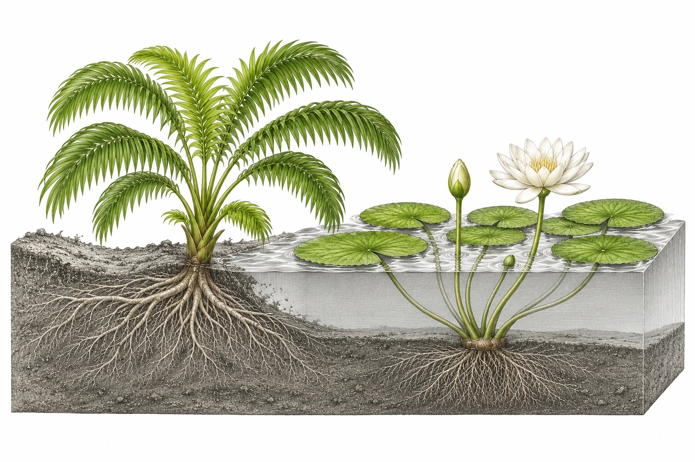

Researchers reached two marshy sites by canoe. At a third site they described dry, compact soil. They recorded the white water lily and raffia palm at all three.

| Site | Ground observed | White water lily | Raffia palm |
|---|---|---|---|
| A | Marshy | 5.1% | 3.6% |
| B | Dry, compact | 0.9% | 16.1% |
| C | Marshy | 11.2% | 12.6% |
Frequency (%) as reported in Tables 3–5. Site B’s lily record describes the site as a whole. The paper gives no water depth or soil condition at that individual plant. The authors described ground conditions by observation.
A lily basin needs water above its rooted sediment. For an adjoining raffia planting, test how long its root zone stays saturated after rain and where overflow can leave. A working depth, drainage rate and root volume still need testing.
Adeniyi, Oyebanji and Adeonipekun (2016), Floral diversity in the wetlands of Ibeju-Lekki area, Lagos, Nigeria, Tables 3–5 and Discussion. The comparison follows three separate survey sites. Soil water retention, species-specific microsites and seasonal hydroperiods remain unmeasured here. University of Lagos record · Local field paper.
Generated conceptual cutaway using the project’s botanical colour atlas as reference: Egyptian white water lily (Nymphaea lotus, LAG-325) and raffia palm (Raphia hookeri, LAG-173). View atlas references.